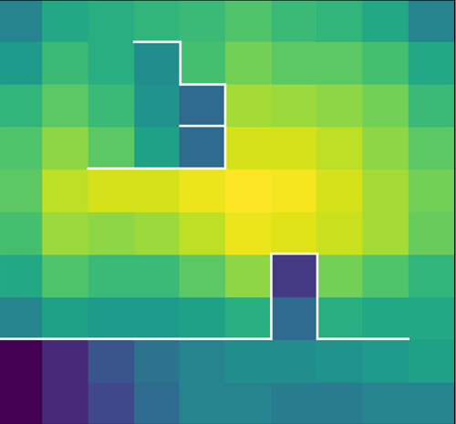

My projects fit in the intersection of machine learning and neuroscience.
1. Unsupervised learning of representations
 Discovery of useful representations is one of the core objectives of deep learning. A simple idea is to train an encoder that maximize the mutual information between its input and output.